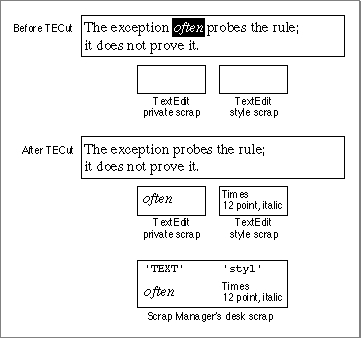

Moving Text In and Out of Edit Records
This section describes how to cut, copy, and paste text, and insert and delete it. Because TextEdit manages the varying character attribute information associated with multistyled text, you use separate routines for monostyled and multistyled text
to perform some of these tasks; this section explains those differences. If your application supports both monostyled and multistyled text, you need to handle these cases separately.Using TextEdit to Cut, Copy, and Paste Text
You can use TextEdit to cut, copy, and paste text within a single edit record, between edit records, or across applications, and to handle menu commands that let the user perform these actions. You use theTECutandTECopyprocedures to cut and copy both monostyled and multistyled text. To paste monostyled text, you use theTEPasteprocedure. To paste multistyled text, you use theTEStylePasteprocedure. To move monostyled text across applications or between an application and a desk accessory, you use theTEFromScrapandTEToScrapfunctions. This section describes how to use these routines and what they do.The
- Note
- This section and those that follow do not describe how to create menus and their commands. For guidelines and a complete discussion of how to create and manage the menus in your application, see the chapter "The Menu Manager" in Inside Macintosh: Macintosh Toolbox Essentials.
TECutprocedure removes and transfers the selected text. TheTECopyprocedure copies the selected text, leaving the original text intact. To implement cut-and-paste or copy-and-paste services, you can couple either of these calls withTEPasteorTEStylePasteto overlay a text selection or insert the text to be pasted at an insertion point.To cut, copy, and paste text within the same edit record or between two edit records within the same application, you do not need to write the text to and from the desk scrap, although this is always done automatically for multistyled text. However, to carry text across applications or between an application and a desk accessory, whether the text is multistyled or monostyled, you must write it to and from the desk scrap.
For monostyled text,
TECutandTECopywrite the text to the private scrap only. TheTEPasteprocedure pastes the monostyled text from the private scrap to the edit record. To determine the length of the text to be pasted, you can call theTEGetScrapLengthfunction which returns the size in bytes of the text in the private scrap, or you can check the value of the global variableTEScrapLength.To move monostyled text across applications or between an application and a desk accessory, you need to use the
TEFromScrapandTEToScrapfunctions, which write text to and from the desk scrap.For multistyled text,
TECutandTECopyalways write both the text and its associated character attribute information to the Scrap Manager's desk scrap under scrap types'TEXT'and'styl'. For more information, see the chapter "Scrap Manager" in Inside Macintosh: More Macintosh Toolbox.The
TEStylePasteprocedure reads both the text and its attributes back from the desk scrap and writes the multistyled text into the edit record's text buffer at the current selection range or insertion point.You can use these procedures to move multistyled text across two applications or between an application and a desk accessory; you don't need to call
TEFromScrapandTEToScrapfor multistyled text. To either copy or move the text selection from the text buffer to the desk scrap,TECutandTECopywrite the text to the private scrap and to the Scrap Manager's desk scrap. To copy or move the attributes along with the text,TECutandTECopywrite the character attribute information stored in the style table to both the style scrap and the Scrap Manager's desk scrap. Figure 2-9 shows what happens when you cut multistyled text usingTECut.Figure 2-9 Cutting text from a multistyled edit record

TheTEStylePasteprocedure either pastes the text from the desk scrap at the insertion point or replaces the current selection range with the text to be pasted. Along with the text,TEStylePastewrites the character attribute information to the style record's style table and applies it to the inserted text.For multistyled text, text is pasted from the desk scrap. Therefore, before you call
TEStylePaste, use the Scrap Manager'sGetScrapprocedure to check the size of the text ('TEXT'data) to be pasted.To calculate the amount of memory required for the style scrap before you cut or copy multistyled text, you can use the information returned by the
TENumStylesfunction. This function returns the number of attribute changes contained in a range of text. Since the style scrap is linear in structure, with one element for each attribute change, you can multiply the number returned byTENumStylesbySizeOf(ScrpSTElement)and add 2 to get the number of bytes needed.Listing 2-8 shows a sample application-defined procedure that handles cut, copy, and paste menu commands. Before the application pastes the multistyled text into the edit record's text at the current selection range, it calls the Scrap Manager's
GetScrapfunction to get the size of the text to be pasted. The code adds the returned value to the size of the text in the edit record, subtracts the size of the selection range, then compares the result against the maximum length of the edit record text to make sure that pasting the text won't exceed it. (To get the selection range length, the code calls the application-defined functionMyGetTESelLength, as shown in Listing 2-7 on page 2-35.)To avoid copying the data when you want only the length of the text returned, pass a value of
NILfor thehDestparameter toGetScrap. For more information aboutGetScrap, see the chapter "Scrap Manager" in Inside Macintosh: More Macintosh Toolbox.Listing 2-8 Handling Cut, Copy, and Paste commands on an Edit menu
PROCEDURE MyHandleEditMenu (myWindow: WindowPtr; menuItem: Integer); CONST kMaxTELength = 32000; kTESlop = 1024; {kTESlop provides some extra security when preflighting edit commands.} VAR myData: MyDocRecHnd; {handle to a document record} myTERec: TEHandle; {handle to TextEdit record} myErr: OSErr; offset: LONGINT; aHandle: Handle; oldSize, newSize: LONGINT; saveErr: OSErr; BEGIN myData := MyDocRecHnd(GetWrefCon(myWindow)); {get window's data record} IF myData = NIL THEN exit(MyDoContentClick); myTERec := myData^^.editRec; {get TERec} IF myTERec = NIL THEN Exit(MyDoContentClick); CASE menuItem OF iCut: BEGIN IF ZeroScrap = noErr THEN BEGIN PurgeSpace(total, contig); IF MyGetTESelLength(myTERec) + kTESlop > contig THEN MyAlertUser(eNoSpaceCut) ELSE TECut(myTERec); END; END; iCopy: BEGIN IF ZeroScrap = noErr THEN TECopy(myTERec); END; iPaste: BEGIN IF GetScrap(NIL, 'TEXT', offset) + (myTERec^^.teLength - MyGetTESelLength(myTERec)) > kMaxTELength THEN MyAlertUser(eExceedPaste) ELSE BEGIN aHandle := Handle(TEGetText(myTERec)); oldSize := GetHandleSize(aHandle); newSize := oldSize + GetScrap + kTESlop SetHandleSize(aHandle, newSize); {see if handle can be resized} saveErr := MemError; SetHandleSize(aHandle, oldSize); IF saveErr <> noErr THEN MyAlertUser(eNoSpacePaste) ELSE TEStylePaste(myTERec); END; END; END; END;Inserting and Deleting Text
You can use TextEdit routines to delete and insert text. You useTEInsertto insert monostyled text into the edit record's text buffer if the current selection range is an insertion point. If the current selection range is a range of text,TEInsertreplaces it with the text to be inserted. You useTEStyleInsertto insert multistyled text in the same way; however, the text and its associated character attribute information are inserted.To delete text, your application calls the same routine whether the text is multistyled or monostyled. The
TEDeleteprocedure removes the text of the current selection range. When the text is multistyled,TEDeletesaves the character attributes in the null scrap to be applied to characters that the user might enter following the deletion. After each editing procedure, TextEdit redraws the text if necessary from the insertion point to the end of the text.You can handle a Clear command using
TEDelete; you callTEDeletewith the handle to the edit record containing the text you want to eliminate. TheTEDeleteprocedure removes the selected text without transferring it to the scrap.iClear: TEDelete(myTERec);